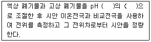
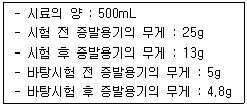
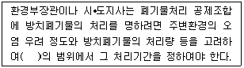
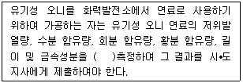

폐기물처리산업기사 (2015-09-19 기출문제)
1과목: 폐기물개론
1. 어떤 쓰레기의 입도를 분석하였더니 입도누적 곡선상의 10%(D10), 30%(D30), 60%(D60), 90%(D90)의 입경이 각각 2, 6, 15, 25mm라면 곡률계수는?
- 15
- 7.5
- 2.0
- 1.2
(정답률: 74%)

2. 다음은 다양한 쓰레기 수집 시스템에 관한 설명이다. 각 시스템에 대한 설명으로 옳지 않은 것은?
- 모노레일 수송은 쓰레기를 적환장에서 최종처분장까지 수송하는데 적용할 수 있다.
- 컨베이어 수송은 지상에 설치한 컨베이어에 의해 수송하는 방법으로 신속 정확한 수송이 가능하나 악취와 경관에 문제가 있다.
- 컨테이너 철도수송은 광대한 지역에서 적용할 수 있는 방법이며 컨테이너의 세정에 많은 물이 요구되어 폐수처리의 문제가 발생한다.
- 관거를 이용한 수거는 자동화, 무공해화가 가능하나 조대쓰레기는 파쇄, 압축 등의 전처리가 필요하다.
(정답률: 84%)
3. 반경이 2.5m인 트롬멜 스크린의 임계속도는?
- 약 19rpm
- 약 27rpm
- 약 32rpm
- 약 38rpm
(정답률: 53%)
4. 폐기물의 발생량은 부피와 중량으로 표시 가능하다. 이 중 부피로 표시할 때 반드시 명시하여야 하는 사항은?
- 폐기물의 압축정도
- 폐기물의 보관기간
- 폐기물의 발생원
- 폐기물의 조성
(정답률: 73%)
5. 다음 중 원소 분석 결과를 이용한 발열량 산정식이 아닌 것은?
- Steuer식
- Dulong식
- Scheurer-Kestner식
- Lambert식
(정답률: 72%)
6. 분뇨에 포함되어 있는 협잡물의 양과 질은 도시, 농촌, 공장지대 등 발생지역에 따라서 그 차가 크며, 우리나라의 경우는 평균 4~7% 정도라고 보고 있다. 이러한 우리나라 분뇨의 물리• 화학적 성질로서 맞지 않는 것은?(오류 신고가 접수된 문제입니다. 반드시 정답과 해설을 확인하시기 바랍니다.)
- 외관상 황색 - 다갈색
- 점도는 비점도로 1.2 ~ 2.2 정도
- 비중은 1.02 정도
- BOD는 8,000 ~ 13,500ppm 정도
(정답률: 40%)
7. 다음 중 조대형폐기물에 속하지 않는 것은?
- 폐플라스틱
- 모포
- 타이어
- 나무류
(정답률: 66%)
8. 쓰레기를 압축시켜 용적 감소율(Volume reduction)이 45%인 경우 압축비(compaction ratio)는?
- 약 1.5
- 약 1.8
- 약 2.2
- 약 2.8
(정답률: 67%)
9. 쓰레기 발생량 조사방법 중 물질수지법에 관한 설명으로 틀린 것은?
- 주로 산업폐기물 발생량을 추산할 때 이용된다.
- 먼저 조사하고자 하는 계의 경계를 정확하게 설정한다.
- 물질수지를 세울 수 있는 상세한 데이터가 있는 경우에 가능하다.
- 모든 인자를 수식화하여 비교적 정확하며 비용이 저렴하다.
(정답률: 78%)
10. 함수율 40%인 슬러지를 건조시켜 함수율을 20%로 하였을 경우 1톤당 증발되는 수분의 양은?
- 0.15ton
- 0.20ton
- 0.25ton
- 0.30ton
(정답률: 72%)
11. 어떤 도시에서 발생되는 쓰레기를 인부 50명이 수거 운반할 때의 MHT는? (단, 1일 10시간 작업, 연간수거실적은 1,220,000ton, 휴가일수 60일/년•인)
- 약 1.⑤
- 약 0.81
- 약 0.33
- 약 0.13
(정답률: 74%)
12. 적환장을 설치하는 경우와 가장 거리가 먼 것은?
- 슬러지수송이나 공기수송방식을 사용할 경우
- 불법투기가 발생할 경우
- 작은 용량의 수집차량을 사용할 경우
- 고밀도 거주지역이 존재할 경우
(정답률: 78%)
13. 3성분의 조성비에 의한 저위발열량 분석 시 3성분에 포함되지 않는 것은?
- 수분
- 고형분
- 가연분
- 회분
(정답률: 73%)
14. 어느 주거지역에서 1일 1인당 1.2kg의 폐기물이 발생되고 1가구당 3인이 살며 이 지역의 총가구수는 3,000가구일 때 5일간의 총폐기물의 발생량은?
- 58,000kg
- 54,000kg
- 31,600kg
- 30,800kg
(정답률: 80%)
15. 쓰레기발생량에 영향을 주는 인자에 관한 설명으로 옳은 것은?
- 쓰레기통이 작을수록 쓰레기 발생량이 증가한다.
- 수집빈도가 높을수록 쓰레기 발생량이 증가한다.
- 생활수준이 높을수록 쓰레기 발생량이 감소한다.
- 도시규모가 작을수록 쓰레기 발생량이 증가한다.
(정답률: 87%)
16. 폐기물을 분석한 결과 수분 20%, 회분 15%, 고정탄소 25%, 휘발분이 40%이고, 휘발분을 원소 분석한 결과 수소 20%, 황 5%, 산소 25%, 탄소 50%이었다. 이 때 이 폐기물의 고위발열량은? (단, Dulong식 적용)
- 약 6,000kcal/kg
- 약 7,000kcal/kg
- 약 8,000kcal/kg
- 약 9,000kcal/kg
(정답률: 30%)
17. MBT에 대한 설명으로 틀린 것은?
- MBT 시설에는 가연성물질을 고형원료로 가공하는 시설이 포함되어 있다.
- MBT는 주로 생활폐기물 전처리 시스템으로서 재활용 가치가 있는 물질을 회수하는 시설이다.
- MBT는 주로 생물학적, 화학적 처리를 통해 재활용 가치가 있는 물질을 회수하는 시설이다.
- MBT는 생활폐기물을 소각 또는 매립하기 전에 재활용 물질을 회수하는 시설 중 한 종류이다.
(정답률: 52%)
18. 어느 쓰레기 시료의 초기 무게가 70kg이었고 이것을 완전건조(함수율 0%)시킨 후 무게를 측정한 결과 40kg이 되었다면 건조 전 시료의 함수율은?
- 35%
- 43%
- 57%
- 60%
(정답률: 59%)
19. 어느 도시에서 발생하는 쓰레기의 성분 중 가연성물질이 약 40%(중량비)를 차지하는 것으로 조사되었다. 밀도 500kg/m3인 쓰레기 10m3 중 가연성물질의 양은?
- 1.2ton
- 1.5ton
- 2ton
- 3ton
(정답률: 77%)
20. 폐기물의 새로운 수송수단 중 Pipeline 수송에 대한 설명으로 가장 거리가 먼 것은?
- 가설 후에 경로변경이 곤란하다.
- 자동화, 무공해화 등의 장점이 있다.
- 조대쓰레기에 대한 파쇄, 압축 등의 전처리가 필요하다.
- 쓰레기 발생밀도가 낮은 곳에서 주로 사용한다.
(정답률: 74%)
2과목: 폐기물처리기술
21. 다음 중 우리나라 음식물 쓰레기를 퇴비로 재활용하는 데 있어서 가장 큰 문제점으로 지적되는 사항은?
- 염분함량
- 발열량
- 유기물함량
- 밀도
(정답률: 82%)
22. 유동층 소각로의 장점이라 할 수 없는 것은?
- 기계적 구동부분이 적어 고장률이 낮다.
- 가스의 온도가 낮고 과잉공기량이 적다.
- 로 내 온도의 자동제어와 열회수가 용이하다.
- 열용량이 커서 파쇄 등 전처리가 필요 없다.
(정답률: 67%)
23. 물리학적으로 분류된 토양수분인 흡습수에 관한 내용으로 틀린 것은?
- 중력수 외부에 표면장력과 중력이 평형을 유지하며 존재하는 물을 말한다.
- 흡습수는 pF 4.5 이상으로 강하게 흡착되어 있다.
- 식물이 직접 이용할 수 없다.
- 부식토에서의 흡습수의 양은 무게비로 70%에 달한다.
(정답률: 62%)
24. 500ton/day 규모의 폐기물 에너지 전환시설의 폐기물 에너지 함량을 2,400kcal/kg로 가정할 때 이로부터 생성되는 열발생률(kcal/kWh)은? (단, 엔진에서 발생한 전기에너지는 20,000kW이며, 전기 공급에 따른 손실은 10%라고 가정한다.)
- 2,778
- 3,624
- 4,342
- 5,198
(정답률: 53%)
25. 폐기물 매립 후 경과 기간에 따른 가스 구성성분의 변화에 대한 설명으로 가장 거리가 먼 것은?
- 1단계 : 호기성 단계로 폐기물 내의 수분이 많은 경우에는 반응이 가속화되고 용존산소가 쉽게 고갈된다.
- 2단계 : 호기성 단계로 임의성 미생물에 의해서 SO4-2와 NO3-가 환원되는 단계이다.
- 3단계 : 혐기성 단계로 CH4가 생성되며 온도가 약 55℃까지는 증가한다.
- 4단계 : 혐기성 단계로 가스 내의 CH4와 CO2의 함량이 거의 일정한 정상상태의 단계이다.
(정답률: 63%)
26. 유기물의 산화공법으로 적용되는 Fenton 산화반응에 사용되는 것으로 가장 적절한 것은?
- 아연과 자외선
- 마그네슘과 자외선
- 철과 과산화수소
- 아연과 과산화수소
(정답률: 82%)
27. 고형물 중 유기물이 90%이고 함수율이 96%인 슬러지 500m3를 소화시킨 결과 유기물 중 2/3가 제거되고 함수율 92%인 슬러지로 변했다면 소화슬러지의 부피는? (단, 모든 슬러지의 비중은 1.0기준)
- 100m3
- 150m3
- 200m3
- 250m3
(정답률: 49%)
28. 밀도가 300kg/m3인 폐기물 중 비가연분이 무게비로 50%이다. 폐기물 10m3중 가연분의 양은?
- 1,500kg
- 2,100kg
- 3,000kg
- 3,500kg
(정답률: 79%)
29. 소각로 설계의 기준이 되고 있는 발열량은?
- 고위발열량
- 저위발열량
- 평균발열량
- 최대발열량
(정답률: 91%)
30. 매립지 발생가스 중 이산화탄소는 밀도가 커서 매립지 하부로 이동하여 지하수와 접촉하게 된다. 지하수에 용해된 이산화탄소에 의한 영향과 가장 거리가 먼 것은?
- 지하수 중 광물의 함량을 증가시킨다.
- 지하수의 경도를 높인다.
- 지하수의 pH를 낮춘다.
- 지하수의 SS농도를 감소시킨다.
(정답률: 71%)
31. 다음 중 내륙매립공법에 해당되지 않는 것은?
- 샌드위치공법
- 셀공법
- 순차투입공법
- 압축매립공법
(정답률: 77%)
32. 함수율 98%인 슬러지를 농축하여 함수율 92%로 하였다면 슬러지의 부피 변화율은 어떻게 변화하는가?
- 1/2로 감소
- 1/3로 감소
- 1/4로 감소
- 1/5로 감소
(정답률: 86%)
33. 유효공극율 0.2, 점토층 위의 침출수 수두 1.5m인 점토 차수층 1.0m를 통과하는데 10년이 걸렸다면 점토 차수층의 투수계수는(cm/sec)는?
- 2.54 × 10-7
- 3.54 × 10-7
- 2.54 × 10-8
- 3.54 × 10-8
(정답률: 66%)
34. 어느 매립지역의 연평균 강수량과 증발산량이 각각 1,400mm와 800mm일 때, 유출량을 통제하여 발생 침출수량을 350mm이하로 하고자 한다. 이 매립지역의 유출량은?
- 150mm 이하
- 150mm 이상
- 250mm 이하
- 250mm 이상
(정답률: 56%)
35. 혐기성 소화와 호기성 소화를 비교한 내용으로 옳지 않는 것은?
- 호기성 소화 시 상층액의 BOD 농도가 낮다.
- 호기성 소화 시 슬러지 발생량이 많다.
- 혐기성 소화 슬러지 탈수성이 불량하다.
- 혐기성 소화 운전이 어렵고 반응시간도 길다.
(정답률: 70%)
36. 배연 탈황 시 발생된 슬러지 처리에 많이 쓰이는 고형화 처리법은?
- 시멘트 기초법
- 석회 기초법
- 자가 시멘트법
- 열가소성 플라스틱법
(정답률: 80%)
37. 퇴비를 효과적으로 생산하기 위하여 퇴비화 공정 중에 주입하는 Bulking Agent에 대한 설명과 가장 거리가 먼 것은?
- 처리대상물질의 수분함량을 조절한다.
- 미생물의 지속적인 공급으로 퇴비의 완숙을 유도한다.
- 퇴비의 질(C/N비)개선에 영향을 준다.
- 처리대상물질 내의 공기가 원활히 유통될 수 있도록 한다.
(정답률: 56%)
38. 다음 중 주로 이용되는 집진장치의 집진원리(기구)로서 가장 거리가 먼 것은?
- 원심력을 이용
- 반데르바알스힘을 이용
- 필터를 이용
- 코로나 방전을 이용
(정답률: 76%)
39. 인간이 1인 1일당 평균 BOD 13g이고, 분뇨평균 배출량이 1L라면 분뇨 BOD농도(ppm)는?
- 13,000ppm
- 15,000ppm
- 17,000ppm
- 20,000ppm
(정답률: 81%)
40. 아래의 폐기물 중간처리기술들에서 처리 후 잔류하는 고형물의 양이 적은 순서대로 나열된 것은?
- ㉠-㉡-㉢
- ㉢-㉡-㉠
- ㉠-㉢-㉡
- ㉡-㉠-㉢
(정답률: 75%)
3과목: 폐기물 공정시험 기준(방법)
41. 폐기물에 함유되어 있는 수분을 측정코자 한다. 증발접시에 시료를 넣고 물중탕 후 건조시킬 때 건조기 안에서 건조시간 및 건조온도로 맞는 것은?
- 2시간, 1⑤ ~ 110℃
- 2시간, 115 ~ 120℃
- 4시간, 1⑤ ~ 110℃
- 4시간, 115 ~ 120℃
(정답률: 60%)
42. 강도 I0의 단색광이 정색액을 통과할 때 그 빛의 80%가 흡수되었다면 흡광도는?
- 약 0.5
- 약 0.6
- 약 0.7
- 약 0.8
(정답률: 83%)
43. 유도결합플라스마-원자발광분광법에 의한 금속류 분석방법에 관한 설명으로 옳지 않은 것은?
- 시료를 고주파유도코일에 의하여 형성된 석영 플라스마에 주입하여 1,000 ~ 2,000K에서 들뜬 원자가 바닥상태로 이동할 때 방출하는 발광선 및 발광강도를 측정한다.
- 대부분의 간섭 물질은 산 분해에 의해 제거된다.
- 물리적 간섭은 특히 시료 중에 산의 농도가 10v/v%이상으로 높거나 용존 고형물질이 1,500mg/L이상으로 높은 반면, 검정용 표준용액의 산의 농도는 5% 이하로 낮을때에 발생한다.
- 간섭효과가 의심되면 대부분의 경우가 시료의 매질로 인해 발생하므로 원자흡수분광광도법 또는 유도결합플라스마-질량분석법과 같은 대체방법과 비교하는 것도 간섭효과를 막는 방법이 될 수 있다.
(정답률: 58%)
44. 이온전극법에 의한 시안 측정목적으로 ( )의 내용이 순서대로 옳은 것은?

- 4 이하, 산성
- 6 ~ 8, 중성
- 9 ~ 10, 알칼리성
- 12 ~ 13, 알칼리성
(정답률: 78%)
45. 원자흡수분광광도법을 이용하여 측정할 수 있는 성분은?
- 시안
- 유기인
- 수은
- 할로겐화 유기물질
(정답률: 59%)
46. 다음 물질 중 다이에틸다이티오카르바민산은의피리딘 용액에 흡수시켜 적자색의 흡광도를 측정하여 정량하는 것은?
- 6가 크롬
- 구리
- 수은
- 비소
(정답률: 73%)
47. 다음 중 휘발성 저급 염소화 탄화수소류의 분석방법으로 가장 적합한 것은? (단, 폐기물공정시험기준에 준함)
- Atomic Absortion Spectrophotometry
- UV/Visible Spectrometry
- Inductively Coupled Plasma-Atomic Emission Spectrometry
- Gas Chromatography
(정답률: 76%)
48. 폐기물 중 기름성분을 측정하는 방법인 기름성분-중량법에 관한 내용 중 잘못된 것은?
- 폐기물 중의 비교적 휘발되지 않는 탄화수소, 탄화수소 유도체, 그리스유상물질 중 노말헥산에 용해되는 성분에 적용한다.
- 시료 적당량을 분별깔때기에 넣고 메틸오렌지용액(0.1 W/V%)을 2~3방울 넣고 황색이 적색으로 변할 때까지 염산(1+1)을 넣어 pH 4 이하로 조절한다.
- 노말헥산층에서 수분을 제거하기 위해서는 무수탄산나트륨을 넣고 흔들어 섞은 후 여과한다.
- 이 시험기준의 정량한계는 0.1% 이하로 한다.
(정답률: 65%)
49. 총칙에서 규정하고 있는 내용 중 옳은 것은?
- '약'이라 함은 기재된 양에 대하여 ±5% 이상의 차가 있어서는 안 된다.
- '방울수'라 함은 0℃에서 정제수 20방울을 적하할 때 그 부피가 약 1mL가 되는 것을 말한다.
- '감암 또는 진공'이라 함은 5mmHg 이하를 말한다.
- '냄새가 없다'라고 기재한 것은 냄새가 없거나, 또는 거의 없는 것을 표시하는 것이다.
(정답률: 68%)
50. 폐기물의 노말헥산 추출물질의 양을 측정하기 위해 다음과 같은 결과를 얻었을 때 노말헥산 추출물질의 농도는?

- 11,800mg/L
- 23,600mg/L
- 32,400mg/L
- 53,800mg/L
(정답률: 52%)
51. 대상 폐기물의 양이 550톤이라면 시료의 최소 수는?
- 32
- 34
- 36
- 38
(정답률: 77%)
52. 염화암모늄을 다량 함유한 시료를 회화법에 의한 유기물분해 하고자 할 경우 휘산되어 손실의 우려가 있는 금속과 가장 거리가 먼 것은?
- 납
- 주석
- 아연
- 마그네슘
(정답률: 59%)
53. 자외선/가시선 분광법에 의한 구리 분석방법에 관한 설명으로 옳은 것은?
- 구리이온은 산성에서 다이에틸다이티오카르바민산나트륨과 반응하여 황갈색의 킬레이트 화합물을 생성한다.
- 구리이온은 산성에서 다이에틸다이티오카르바민산나트륨과 반응하여 적자색의 킬레이트 화합물을 생성한다.
- 구리이온은 알칼리성에서 다이에틸다이티오카르바민산나트륨과 반응하여 황갈색의 킬레이트 화합물을 생성한다.
- 구리이온은 알칼리성에서 다이에틸다이티오카르바민산나트륨과 반응하여 적자색의 킬레이트 화합물을 생성한다.
(정답률: 74%)
54. Pb(NO3)2를 사용하여 0.5mg/L의 납표준원액(1,000mg/L) 1,000mL를 제조하려고 한다. Pb(NO3)2을 얼마나 취해야 하는가? (단, Pb의 원자량 : 207.2)
- 약 200mg
- 약 400mg
- 약 600mg
- 약 800mg
(정답률: 29%)
55. 기체크로마토그래피로 유기인화합물을 분리하고자 할 때 사용되는 정제용 컬럼이 아닌 것은?
- 규산 컬럼
- 플로리실 컬럼
- 활성탄 컬럼
- 실리카겔 컬럼
(정답률: 44%)
56. 시료의 조제방법 중 시료의 축소방법이 아닌 것은?
- 구획법
- 구분축소법
- 원추 4분법
- 교호삽법
(정답률: 84%)
57. 유리전극법을 적용한 수소이온농도 측정개요에 관한 내용으로 틀린 것은?
- pH를 0.01까지 측정한다.
- 유리전극은 일반적으로 용액의 색도, 탁도, 콜로이드성 물질들에 의해 간섭을 받지 않는다.
- 유리전극은 일반적으로 용액의 산화 및 환원성 물질들 그리고 염도에 의해 간섭을 받지 않는다.
- pH 4이하에서는 나트륨에 대한 오차가 발생할 수 있으므로 “낮은 나트륨 오차 전극”을 사용한다.
(정답률: 64%)
58. 원자흡수분광광도법에 의한 6가크롬의 측정원리에 대한 설명으로 옳은 것은?
- 정량한계는 0.1mg/L이다.
- 아세틸렌-일산화이질소는 철, 니켈의 방해는 많으나 감도가 높다.
- 정량범위는 장치 및 조건에 따라 다르나 267.72nm에서 2.0 ~ 5mg/L 정도이다.
- 공기, 아세틸렌으로는 아세틸렌 유량이 많은 쪽이 감도가 높다.
(정답률: 56%)
59. 시안을 자외선/가시선 분광법으로 측정할 때 클로라민-T와 피리딘•피라졸론 혼합액을 넣어 나타내는 색으로 옳은 것은?
- 적색
- 황갈색
- 적자색
- 청색
(정답률: 69%)
60. 자외선/가시선 분광광도계 광원부의 광원 중 가시부와 근적외부의 광원으로 주로 사용하는 것은?
- 중수소방전관
- 광전자증배관
- 텅스텐램프
- 석영방전관
(정답률: 67%)
4과목: 폐기물 관계 법규
61. 폐기물 처리시설 종류의 구분이 틀린 것은?
- 물리적 재활용 시설 : 증발•농축 시설
- 화학적 재활용 시설 : 고형화•고화 시설
- 생물학적 재활용 시설 : 버섯재배 시설
- 화학적 재활용 시설 : 응집•침전 시설
(정답률: 45%)
62. 폐기물 관리 종합계획에 포함되어야 할 사항과 가장 거리가 먼 것은?
- 종합계획의 기조
- 폐기물관리 현황 및 평가
- 부문별 폐기물 관리 정책
- 재원 조달 계획
(정답률: 67%)
63. 의료폐기물(위해의료폐기물) 중 시험•검사 등에 사용된 배양액, 배양용기, 보관균주, 폐시험관, 슬라이드, 커버글라스, 폐배지, 폐장갑이 해당되는 것은?
- 병리계폐기물
- 손상성폐기물
- 위생계폐기물
- 보건성폐기물
(정답률: 54%)
64. 방치폐기물의 처리기간에 관한 내용으로 ( )에 알맞은 것은?

- 1개월
- 2개월
- 4개월
- 6개월
(정답률: 65%)
65. 용어의 정의로 틀린 것은?
- 폐기물처리시설 : 폐기물의 중간처분시설, 최종처분시설 및 재활용시설로서 대통령령으로 정하는 시설을 말한다.
- 처리 : 폐기물의 소각, 중화, 파쇄, 고형화 등의 중간처리와 매립하거나 해역으로 배출하는 등의 최종처리를 말한다.
- 지정폐기물 : 사업장폐기물 중 폐유•폐산 등 주변환경을 오염시킬 수 있거나 의료폐기물 등 인체에 위해를 줄 수 있는 해로운 물질로서 대통령령으로 정하는 폐기물을 말한다.
- 생활폐기물 : 사업장폐기물외의 폐기물을 말한다.
(정답률: 64%)
66. 멸균분쇄시설의 검사기관과 가장 거리가 먼 것은?
- 한국환경공단
- 보건환경연구원
- 한국건설기술연구원
- 한국산업기술시험원
(정답률: 62%)
67. 관리형 매립시설에서 발생하는 침출수의 생물화학적 산소요구량, 화학적 산소요구량(중크롬산칼륨법에 따른 경우), 부유물질량의 배출허용기준으로 옳은 것은? (단, 청정지역에 해당하는 경우)
- 30mg/L, 200mg/L, 30mg/L
- 30mg/L, 200mg/L, 50mg/L
- 30mg/L, 400mg/L, 30mg/L
- 50mg/L, 600mg/L, 50mg/L
(정답률: 72%)
68. 폐기물처리업자(폐기물 재활용업자)의 준수사항에 관한 내용으로 ( )에 알맞은 것은?

- 매 월 1회 이상
- 매 2월 1회 이상
- 매 분기당 1회 이상
- 매 반기당 1회 이상
(정답률: 73%)
69. 환경부장관 등이 실시하는 폐기물 통계 조사 중 폐기물 발생원 등에 관한 조사의 실시 주기는?
- 매 2년
- 매 3년
- 매 5년
- 매 10년
(정답률: 63%)
70. 폐기물 처리시설을 설치하고자 하는 자는 폐기물 처분시설 또는 재활용시설 설치승인신청서를 누구에게 제출하여야 하는가?
- 환경부장관이나 지방환경관서의 장
- 시•도지사나 지방환경관서의 장
- 국립환경연구원장이나 지방자치단체의 장
- 보건환경연구원장이나 지방자치단체의 장
(정답률: 61%)
71. 토지 이용의 제한기간은 폐기물매립시설의 사용이 종료되거나 그 시설이 폐쇄된 날부터 몇 년 이내로 하는가?
- 10년 이내
- 20년 이내
- 30년 이내
- 40년 이내
(정답률: 74%)
72. 의료폐기물의 수집•운반 차량의 차체는 어떤색으로 색칠하여야 하는가?
- 청색
- 흰색
- 황색
- 녹색
(정답률: 78%)
73. 다음 중 폐기물처리시설의 유지•관리에 관한 기술관리를 대행할 수 있는 자는?
- 지정 폐기물 최종처리업자
- 환경보전협회
- 한국환경산업기술원
- 한국환경공단
(정답률: 92%)
74. 폐기물 관리의 기본원칙과 가장 거리가 먼 것은?
- 폐기물은 중간처리보다는 소각 및 매립의 최종처리를 우선하여 비용과 유해성을 최소화 하여야 한다.
- 폐기물로 인하여 환경오염을 일으킨 자는 오염된 환경을 복원할 책임을 지며, 오염으로 인한 피해의 구제에 드는 비용을 부담하여야 한다.
- 국내에서 발생한 폐기물은 가능하면 국내에서 처리되어야 하고, 폐기물의 수입은 되도록 억제되어야 한다.
- 누구든지 폐기물을 배출하는 경우에는 주변환경이나 주민의 건강에 위해를 끼치지 아니하도록 사전에 적절한 조치를 하여야 한다.
(정답률: 66%)
75. 음식물류 폐기물 처리시설에서 기술관리인의 자격기준에 해당하지 않는 것은?
- 화공산업기사
- 전기기사
- 산업위생관리기사
- 토목산업기사
(정답률: 74%)
76. 폐기물 처리업자가 폐업을 한 경우 폐업 한 날부터 며칠 이내에 구비서류를 첨부하여 시•도지사 등에게 제출하여야 하는가?
- 5일 이내
- 7일 이내
- 15일 이내
- 20일 이내
(정답률: 73%)
77. 다음 지정폐기물의 처리기준 및 방법이 틀린 것은?
- 폐석면 : 분진이나 부스러기는 고온용융처분하거나 고형화처분하여야 한다.
- 폐페인트 및 폐락카 : 고온소각 또는 고온용융처분하여야 한다.
- 폐농약 : 액체상태의 것은 고온소각 또는 고온용융처분하여야 한다.
- 폴리클로리네이티드비페닐 함유폐기물 : 고온소각하거나 고온용융처분하여야 한다.
(정답률: 67%)
78. 폐기물처리시설의 유지•관리에 관한 기술업무를 담당할 기술관리인을 두어야 하는 폐기물처리시설 기준으로 틀린 것은? (단, 폐기물처리업자가 운영하는 폐기물처리시설이 아닌 경우임)
- 멸균분쇄시설로서 1일 처리능력이 5톤 이상인 시설
- 퇴비화시설로 1일 처리능력이 5톤 이상인 시설
- 절단시설로서 1일 처리능력이 100톤 이상인 시설
- 압축시설로서 1일 처리능력이 100톤 이상인 시설
(정답률: 69%)
79. 폐기물 재활용업자가 시•도지사로부터 승인받은 임시보관시설에 태반을 보관하는 경우 시•도지사가 임시보관시설을 승인함에 있어 따라야 하는 기준으로 옳은 것은?
- 임시보관시설에서의 태반 보관 허용량은 10톤 미만일 것
- 임시보관시설에서의 태반 보관 허용량은 20톤 미만일 것
- 태반의 배출장소와 그 태반 재활용시설이 있는 사업장과의 거리가 50킬로미터 이하일 것
- 임시보관시설에서의 태반 보관 기간은 태반이 임시보관시설에 도착한 날부터 5일 이내일 것
(정답률: 75%)
80. 생활폐기물의 처리대행자가 아닌 대상은?
- 폐기물처리업자
- 재활용센터를 운용하는 자
- 한국환경공단
- 한국자원재생공사
(정답률: 62%)
곡률계수는 D60 / D30의 값으로 계산된다. 따라서 15 / 6 = 2.5가 되는데, 보기에서는 2.0과 1.2가 있다. 이 중에서 정답은 1.2이다.
이유는 곡률계수가 작을수록 입도분포가 좁아지고, 큰 입경의 입도비중이 작아진다. 따라서 곡률계수가 작을수록 쓰레기의 입도분포가 좁아지고, 입경이 큰 입자의 비중이 작아진다는 것을 의미한다. 이는 쓰레기의 처리나 재활용 등에 있어서 효율적인 관리를 할 수 있도록 도와준다. 따라서 D60 / D30 값이 작은 1.2가 가장 적합한 곡률계수이다.